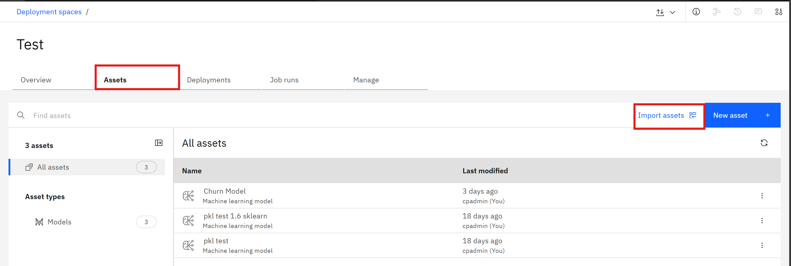
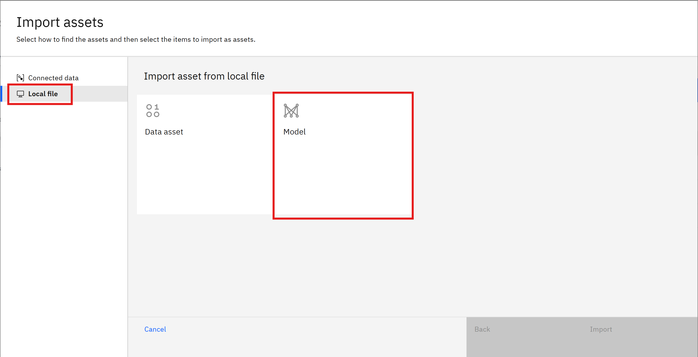
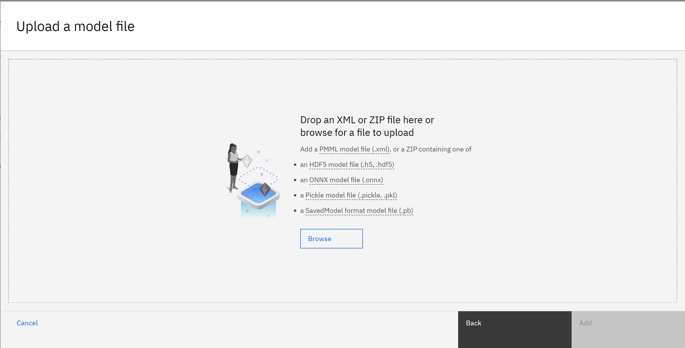
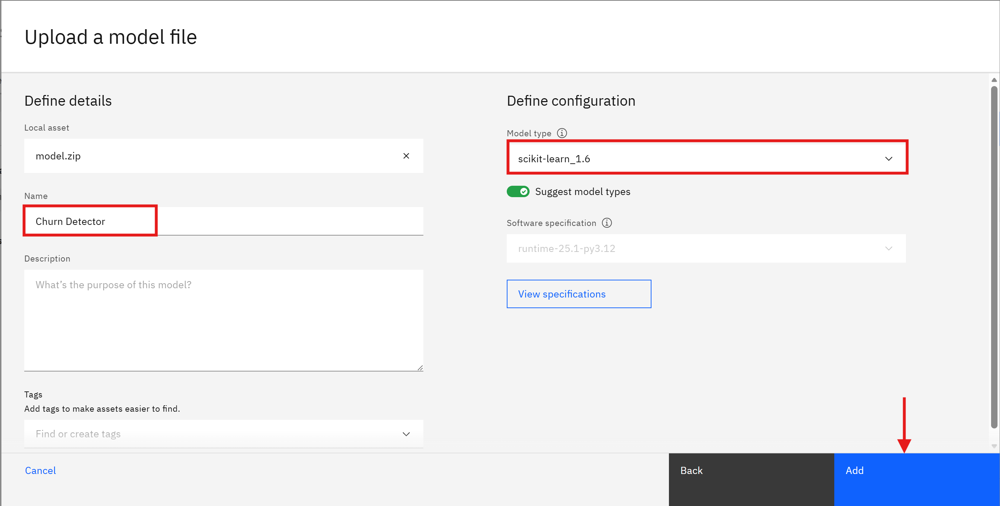
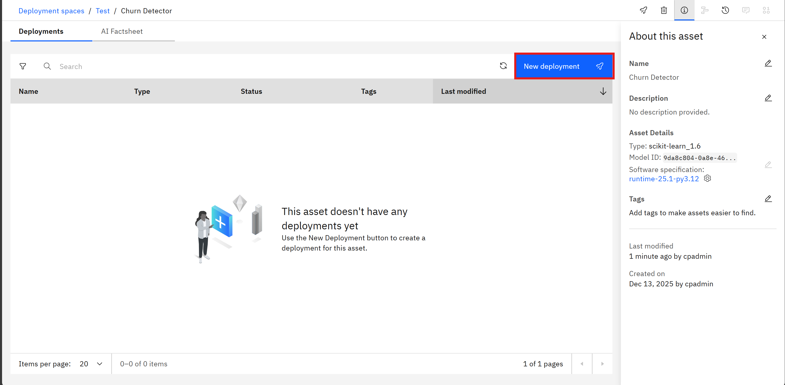
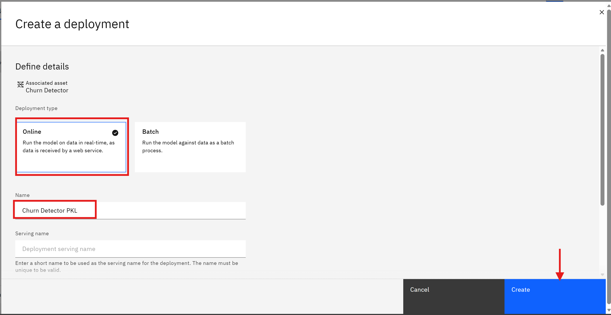
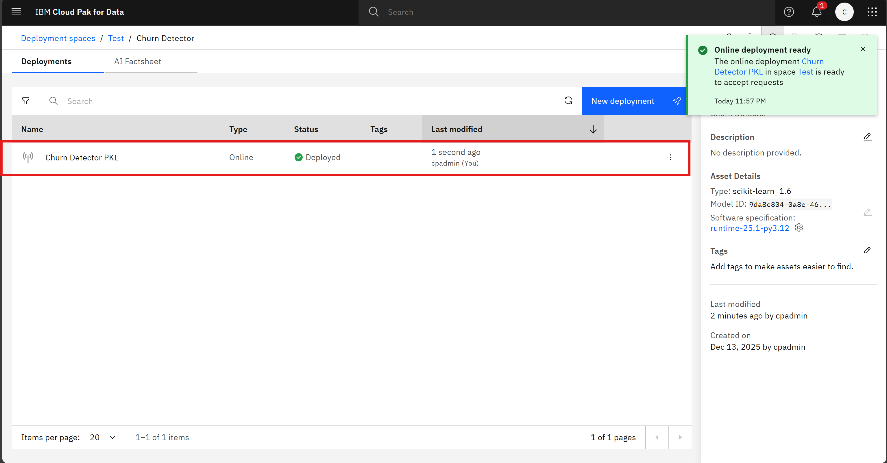
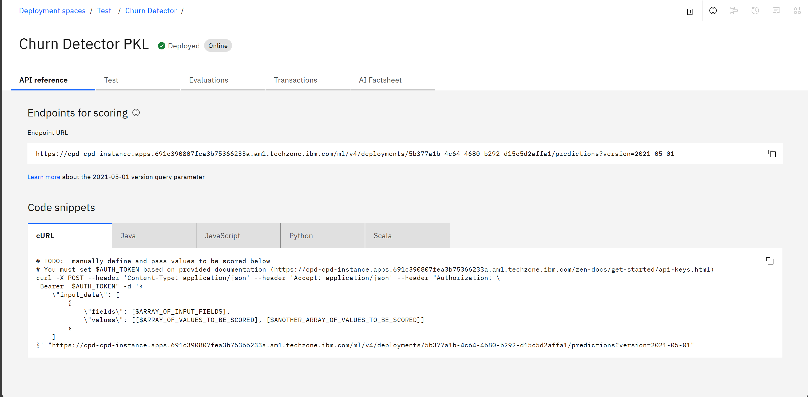
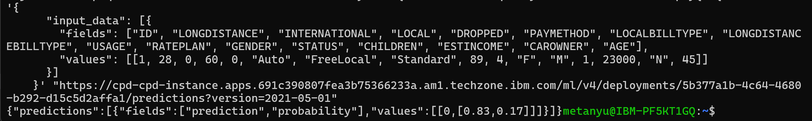

3. Further model deployment¶
Exercise: Deploy a premade .pkl model¶
In this section, you will deploy a premade machine learning model saved as a .pkl file. Follow the steps below to complete the deployment process.
Deploy the model as an online deployment¶
- Download the Model: Download the premade model file zip
model.zip. -
Go to your deployment space. Go to tab Assets, then click Import assets +.

-
In the pop-up window, click Local file and select Model.

-
Select Browse to upload the
model.zipfile you downloaded earlier. Take note of the available formats. In this part, we are uploading the zip file containing the.pklmodel.
-
In the next window, provide a name for your model (e.g.,
Churn Detector) and select Model type asscikit-learn_1.6, then select Add.Tip
Toggle off the
Suggest model typesoption to view all available supported model types.
-
The screen should now show deployments of this model. Click on Deployments tab, then click New deployment.

-
Select Online deployment, and name your deployment (e.g.,
Churn Detector PKL), then click Create.
-
Your model is now deployed! You can view the deployment in the Deployments tab.

Test the deployed model¶
In this section, we are going to use the endpoint of the deployed model to make predictions.
- From the Deployments tab, click on the deployment you just created (e.g.,
Churn Detector PKL). -
Take note of the Code snippets has been made available for you. In this section, we are going to use cURL to test the endpoint.

-
Copy the cURL command provided in the Code snippets section.
-
Get your API key from Profile and settings (top right corner). Then, get your Bearer Token by using the following cURL command in your terminal (replace
<your_api_key>with your actual API key):curl -k -X POST \ "https://<instance_route>/icp4d-api/v1/authorize" \ -H "Content-Type: application/json" \ -d '{ "username":"<username>", "api_key":"<api_key>" }' -
Replace the
Bearer <token>in the copied cURL command with the token you obtained in the previous step and use this payload:6. Run the modified cURL command in your terminal. You should receive a response with the prediction result from the deployed model.{ "input_data": [{ "fields": ["ID", "LONGDISTANCE", "INTERNATIONAL", "LOCAL", "DROPPED", "PAYMETHOD", "LOCALBILLTYPE", "LONGDISTANCEBILLTYPE", "USAGE", "RATEPLAN", "GENDER", "STATUS", "CHILDREN", "ESTINCOME", "CAROWNER", "AGE"], "values": [[1, 28, 0, 60, 0, "Auto", "FreeLocal", "Standard", 89, 4, "F", "M", 1, 23000, "N", 45]] }] }